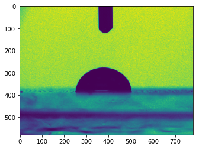

import-data
Ascii files
Tables of numbers
Simplest way to import data aranged in table from an ascii file is to use numpy:
import numpy as np
data = np.genfromtxt('data.csv')
print(data)[[37.70587485 25.87930691 11.1807849 6.29982498]
[ 8.56702615 6.42440682 26.43331203 4.75911353]
[46.62942399 30.2224285 49.35137806 16.32100564]
[38.99391383 31.54382599 14.88671628 9.92786169]
[15.50027605 48.45142251 30.16164798 18.29314173]
[ 6.6336436 4.23085519 33.69157162 39.33629762]
[ 3.64350001 0.61175817 18.83570963 13.17930294]
[ 2.48434325 33.77391739 1.89173126 27.08342268]
[15.48219208 49.78432857 48.17905851 35.66727198]
[22.16530832 32.91388506 38.37315601 32.00800632]
[32.5199885 45.86655672 12.45190816 33.92922999]
[49.21332445 43.04899737 41.55144366 42.84145576]
[37.2348323 33.27424985 1.9561426 46.64086924]]
Exporting arrays of numbers is as simple
new_data = data*4.3
np.savetxt('new_data.csv', new_data)Mixed table of numbers and text
The pandas package allows to deal with complex sets of data including text and numbers.
import pandas as pd
data = pd.read_csv('data_mixed.csv')
print(data) yellow 125 [0.18848372 0.54320351 0.1604927 ]
0 blue 24 [0.33882547 0.87313498 0.46219675]
1 red 93 [0.30873892 0.21764292 0.38400272]
2 grey 23 [0.5043959 0.548625 0.60459919]
Complex data
Data than are not organized in a table (like text, result measurements from an exotic machine) can be imported using the builtins python functions.
with open('data_complex.txt', 'r') as f:
data = f.readlines()
for line in data:
print(line)From wikipedia:
Python is an interpreted high-level programming language for
general-purpose programming. Created by Guido van Rossum and
first released in 1991, Python has a design philosophy that
emphasizes code readability, and a syntax that allows programmers
to express concepts in fewer lines of code,[25][26]
notably using significant whitespace. It provides constructs that
enable clear programming on both small and large scales.[27]
Images
The scipy package makes it particularly easy to import on work with images.
from scipy import misc
image = misc.imread('image.bmp')/usr/lib/python3.6/site-packages/ipykernel_launcher.py:2: DeprecationWarning: `imread` is deprecated!
`imread` is deprecated in SciPy 1.0.0, and will be removed in 1.2.0.
Use ``imageio.imread`` instead.
Images can then be displayed it with matplotlib.
import matplotlib.pyplot as plt
plt.figure()
plt.imshow(image)
plt.show()
Images are stored as arrays of numbers, so pixel values are easily accesible
print("Pixel values:\n{}".format(image))
print("Value of the pixel at (10,10): {}".format(image[10, 10]))Pixel values:
[[180 186 191 ... 224 225 232]
[192 180 179 ... 221 226 226]
[184 186 185 ... 230 225 225]
...
[ 30 30 30 ... 153 155 156]
[ 29 28 28 ... 150 138 147]
[ 26 26 28 ... 136 137 140]]
Value of the pixel at (10,10): 189